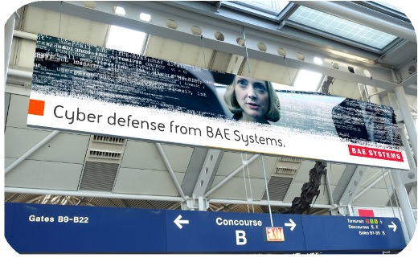
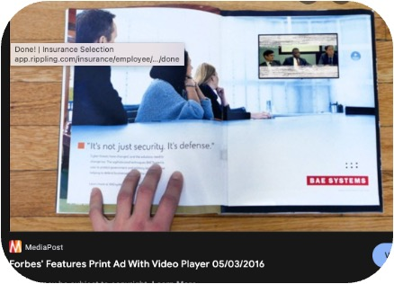

BAE Systems
Cyber Division
$20M Campaign.
1,600% Web Traffic Lift.
2015–2018 · Guildford, UK & Los Altos, CA
BAE Systems' Cyber Division had strong capabilities but near-zero brand awareness in the US. The division needed a distinctive brand identity and a bold, multi-channel go-to-market campaign to establish credibility and drive measurable recognition.
Oversaw agency strategy and execution for a $20M global brand awareness campaign. Directed a comprehensive multi-channel rollout spanning nationwide television advertising, high-impact OOH billboards, targeted digital media, and integrated social outreach — alongside a complete brand identity refresh.
The campaign drove a 1,600% year-over-year increase in web traffic, firmly establishing BAE Systems Cyber Division as a recognized name in the US cybersecurity market.

